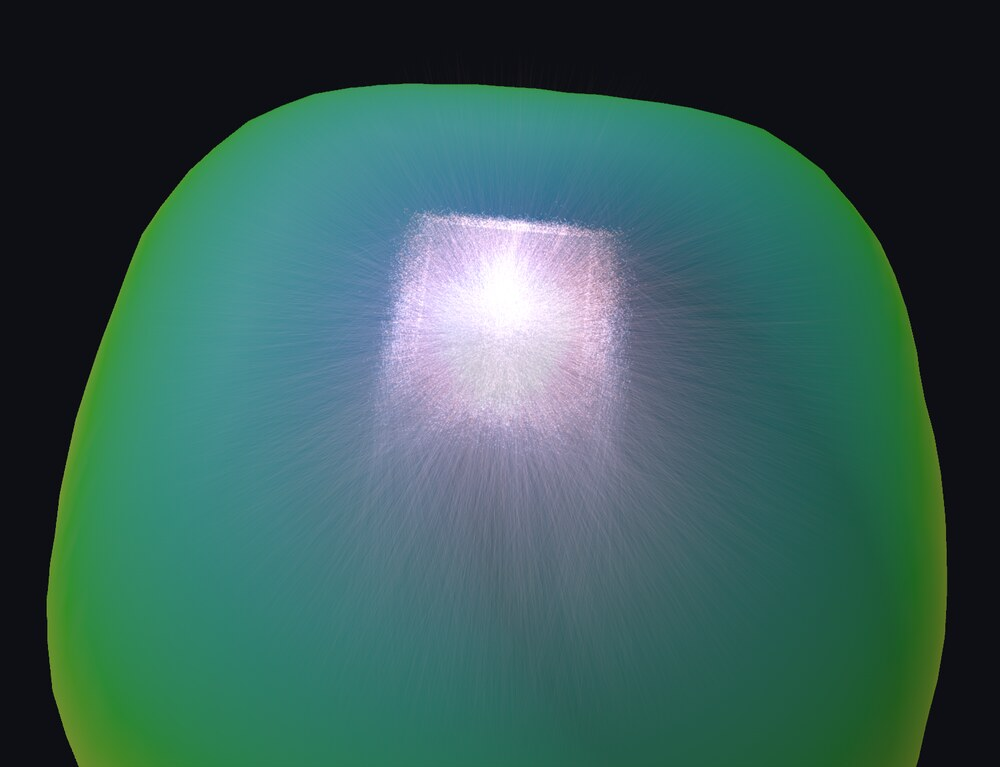
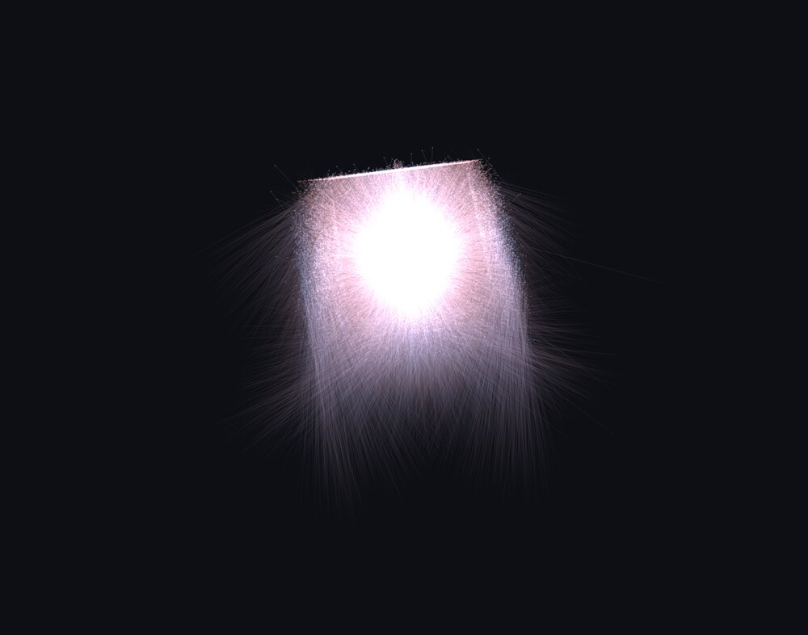

Reader, writer and far-field converter for the ray files LED manufacturers publish: the near-field emission of a source, stored as millions of individual rays.
The viewer runs in the browser and needs WebGPU (Chrome, Edge, or Safari 26). Nothing is uploaded: the file is read locally.

An LDT or IES photometric file describes a luminaire as a point: intensity in every direction, measured far enough away that the size of the source no longer matters. That is all a lighting designer needs for a room.
It is not enough for someone designing the optic itself. Put a lens two millimetres above a die and the point-source assumption collapses, because different parts of the lens see different parts of the emitter. So LED makers publish ray files instead: every ray with a start point in millimetres, a direction, a flux, and optionally a wavelength, polarisation state or colour coordinates. Packages run from 100 000 to 20 million rays.
IES TM-25 is the vendor-neutral format for that data, consumed by Zemax OpticStudio, LightTools, SPEOS and similar tools. ams OSRAM, Lumileds, Nichia and Cree all ship it. Until this crate there was no open-source reader, and the specification is paywalled.
Two vendors, two interpretations. The optional column-name trailer is written by ams OSRAM and omitted by Lumileds, so the ray block starts at a different offset with nothing in the header to say which. Lumileds also writes the “value unknown” sentinel with its bytes reversed, which read little-endian is not a NaN but the denormal 2.36 × 10⁻³⁸ — small enough to pass for a real measurement. Both are handled, and the differences are written up in the format notes.
Drawn from their real start points, so the die, the lens exit and the package geometry are visible.
Every ray binned into a C/γ grid with solid-angle normalisation — the same distribution an LDT would carry.
A target plane from 0.1 mm to 500 mm above the source, in W/m², where the point-source model breaks down.
PPFD for horticultural sources, and ICNIRP actinic dose for UV emitters, from the header spectrum.
The viewer exports what it computes as EULUMDAT, IES, ATLA XML with the
spectrum attached, or a relative .spd. It can also hand the ray
set to a Monte Carlo goniophotometer, which replays the stored rays through a
cover or reflector you place millimetres away.

Apple M2 Max, release build, warm page cache, 28-byte records. The 20-million ray file is 560 MB.
| Stage | Time | Throughput |
|---|---|---|
| Header only | 0.4 ms | — |
| Stream and decode every ray | 0.22 s | 91 M rays/s |
| Memory-mapped decode | 0.21 s | 96 M rays/s |
| Plus reservoir, 200k rays kept | 0.33 s | 61 M rays/s |
| Plus far field, 10°/5° grid | 0.95 s | 21 M rays/s |
| Far field and reservoir together | 1.08 s | 19 M rays/s |
Throughput is flat from 100 000 to 20 million rays, so the files most people
download finish in milliseconds. Decoding is a bounds-checked reinterpret of
f32 columns and runs at memory speed; the far-field stage costs
more because every ray needs a trigonometric call and a solid-angle-weighted
bin write. Reproduce it with
cargo run --release --example tm25_bench -- file.TM25RAY.
[dependencies]
tm25ray = "0.1"No dependencies beyond thiserror, std-only, and it builds unchanged for wasm32.
use tm25ray::{FarField, FluxKind, Tm25File};
let bytes = std::fs::read("rayfile_100k.TM25RAY")?;
let file = Tm25File::parse(&bytes)?;
let h = &file.header;
println!("{} rays, {:?}, {} W", h.n_rays, h.flux_kind(), h.radiant_flux_w);
let rays: Vec<_> = file.rays.iter().collect();
let ff = FarField::from_rays(&rays, 10.0, 5.0, FluxKind::Radiometric);
println!("half intensity at {:?}°", ff.half_intensity_gamma());use std::io::BufReader;
use tm25ray::{Reservoir, Tm25Reader};
let file = std::fs::File::open("rayfile_20M.TM25RAY")?;
let mut reader = Tm25Reader::new(BufReader::with_capacity(1 << 20, file))?;
let mut keep = Reservoir::new(200_000, 1);
loop {
let chunk = reader.read_chunk(65_536)?;
if chunk.is_empty() { break; }
keep.extend(chunk);
}
let rays = keep.finish(); // flux rescaled to the file total
In the browser the same reader is fed Blob.slice chunks, which is
how the viewer handles a 560 MB file without loading it. The subsampling keeps
a fixed number of rays and rescales their flux, so the total is preserved.
Vendor licences permit use but not redistribution, so no manufacturer's file can ship here. Instead there is a generated one, free to copy, ray-traced from an analytic model: a 1 mm square chip emitting Lambertian under a 1.4 mm silicone dome, refracted at the dome surface by Snell's law, with a small fraction escaping past the rim. It carries a phosphor-white spectrum and a per-ray wavelength, so the spectral colouring in the viewer has something to show.
Download one, then drop it on the viewer. Both files describe the same source: 1.05 W radiant, half intensity at 62°.
It is a simulation and its header says so, in the creation-method field and in
the description strings. The numbers are plausible rather than a real
product's. Regenerate it at any size with
cargo run --release --example tm25_sample -- out.TM25RAY 250000.
For real measured data, ams OSRAM, Lumileds, Nichia and Cree publish ray files on their product pages, usually beside the datasheet and in several ray counts. Those are the files this crate was verified against.